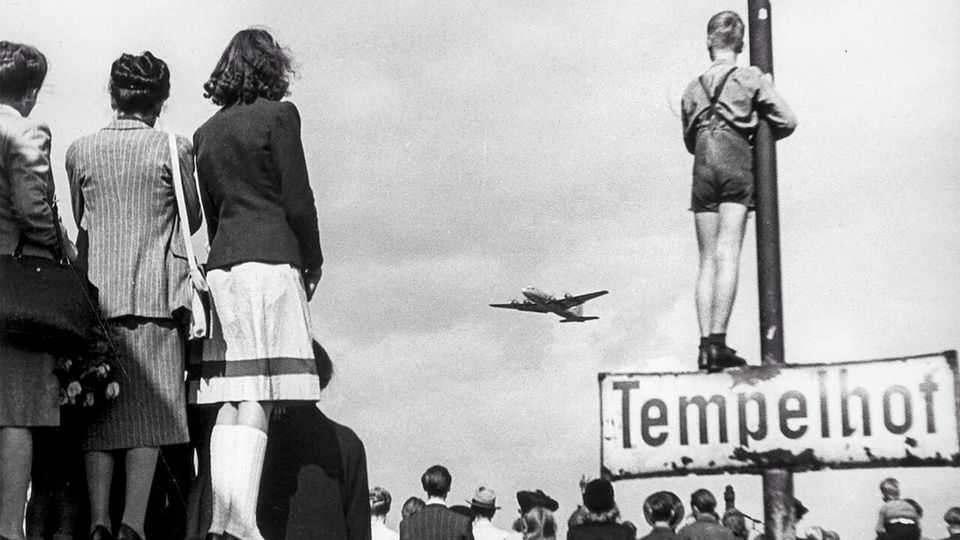

Why Berlin’s airport is still completely hopeless
Blame passengers, lobbying, history and geography
July 16th 2026

What is it with Berlin and airports? First came Tempelhof, once a repository for Nazi megalomania, later the site of the Berlin airlift, an early cold-war drama, and now a vast and unusual city park. Then it was Tegel, a charming spot adored by locals but bursting at the seams by the end of its life. Finally came the tragicomedy of Berlin Brandenburg Airport, or ber. It opened in 2020, nine years late, €5bn over budget and a homage to Germany’s mishandling of megaprojects.
That should have been that. But locals flocking to ber as the summer holidays began last week may still have felt short-changed. The airport currently has flights to just five long-haul destinations. Heathrow has around 100; even Warsaw has close to 20. Passengers flying beyond Europe must usually transfer elsewhere. “Berlin doesn’t have a capital-city airport,” said Tim Clark, president of Emirates, during a visit last month. “It’s a really sad situation.”
Germany’s most populous city remains the only big European capital without a home-based long-haul airline. And attempts to entice the likes of Emirates to ber have been grounded by lobbying by Frankfurt-based Lufthansa, Germany’s biggest airline, which says its Gulf rivals are unfairly subsidised. Berlin’s champions regard this as protectionist tosh, but have lost the argument.
Worse, passenger numbers at ber last year were one-quarter down on the total at Berlin’s airports before the pandemic. Budget airlines have slashed flights. In April Ryanair said it would close its operating base at the airport, calling it “the worst-recovering major gateway in Europe”. Lufthansa has expanded its Frankfurt and Munich hubs, but hesitated in Berlin, blaming its fees and taxes. ber posts vast losses.
Geography and history may simply have overwhelmed the city. German airlines were banned from flying to West Berlin during the cold war, letting Frankfurt and Munich become hubs. Germany’s industrial heartland is in its south; the densest population is in the west. Stranded far from other industrial or commercial centres, Berlin does not have the catchment area of its rivals and struggles to attract corporate custom. “When they moved the capital from Bonn to Berlin, they should have moved the airport from Frankfurt too“, jokes Cord Schellenberg, a consultant. That would have been a flight of fancy.■
To stay on top of the biggest European stories, sign up to Café Europa, our weekly subscriber-only newsletter.